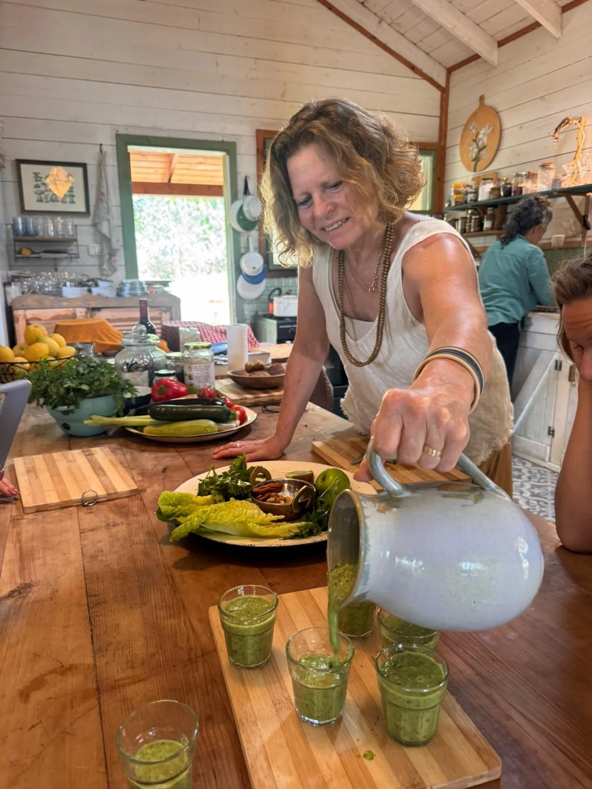
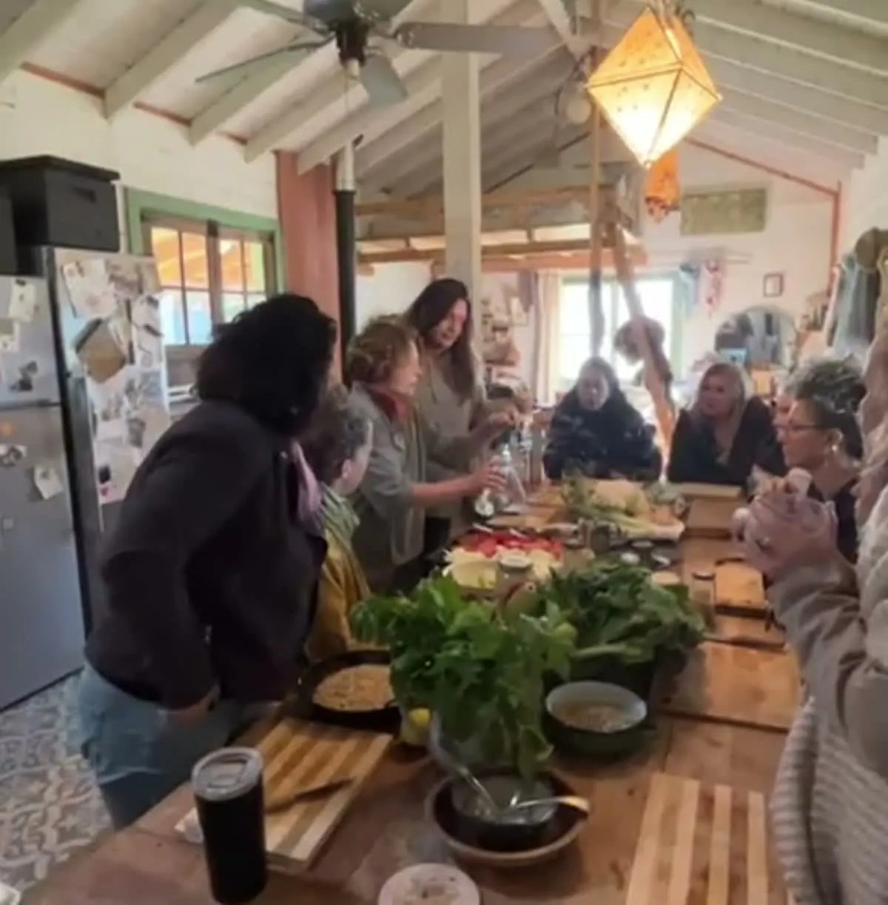
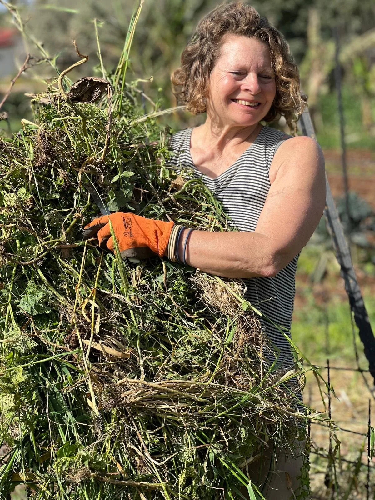
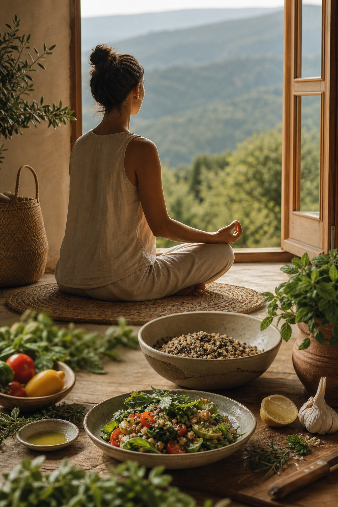
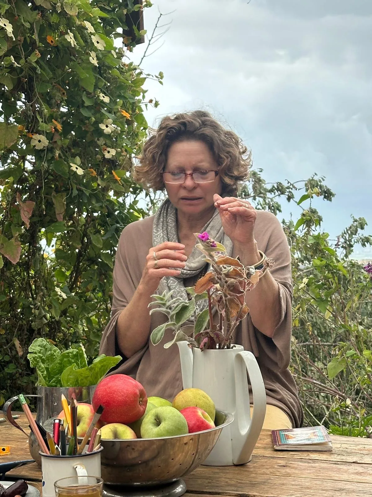
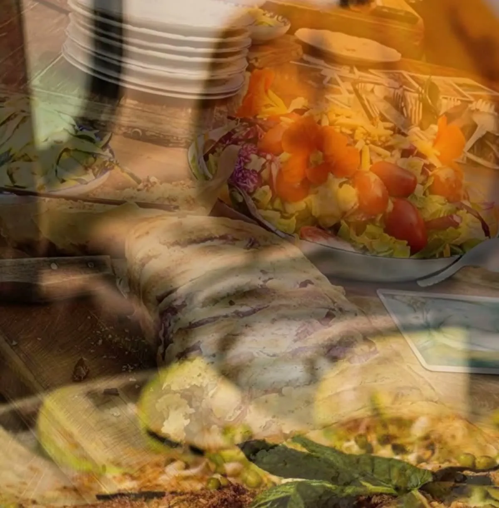

נתחיל לצעוד ביחד צעד צעד בדרך היוגה של התזונה.
היוגה של התזונה · ויניאסה במטבח
ניסית פעם
להסתכל לאוכל בעיניים?
קורס מעשי שבו נלמד, ניצור, נחקור ונטעם דרך חדשה להתייחס לאוכל - בהשראת פילוסופיית היוגה, תורת הרמב"ם, חיבור והקשבה לגוף, לטבע ולעצמינו.
אני רוצה להצטרף לקורס הקרוב4 מפגשיםימי שני
19.10 · 26.102.11 · 9.11
10:00–14:00כל מפגש
המפגשים מתקיימים בכליל

מה זה היוגה של התזונה?
זה לא עוד קורס בישול, או תוכנית דיאטה
זהו מרחב מעשי בו נחקור ונתבונן על הדרך שבה האכילה על כל גווניה מתבטאת בחיי היום יום שלנו. דרך החושים, פילוסופית היוגה, יצירה במטבח, ארוחות אותן נאכל בשתיקה, בהתבוננות, בתשומת לב.
נפגוש את האוכל, את המזון ואת פעולת האכילה מזוויות חדשות, במקום שקט וסקרן ללא שיפוטיות.

אוכל, טבע, אדמה, שורשים
למידה ויצירה חווייתית בבית עץ קסום בכליל.

מה נלמד בקורס?
אין דרך אחת לאכול.
לא תקבלו כאן רשימת מותר ואסור. נלמד להתבונן, לטעום, לבשל ולהקשיב, עד שהבחירות מתחילות להגיע מתוך הבנה של מה שמתאים לך - פיזית ומנטלית.
המטרה אינה עוד מערכת של חוקים, אלא יותר חופש, ביטחון ויצירתיות במטבח ובחיים.
מהי ויניאסה במטבח?
תנועה שמחברת בין הדברים
ביוגה, ויניאסה היא תנועה שמחברת בין פעולה אחת לבאה אחריה. גם במטבח אנחנו יכולים לתרגל תנועה: בין עונות וחומרי גלם לטעמים וצבעים, בין ידע ומתכונים ליצירה חופשית במטבח.
ואת כל אלו נבסס על רעיונות מהיוגה, הרפואה הסינית, האיורוודה ותורת הרמב״ם - לא כדי לבחור שיטה אחת, אלא כדי לפתח את הסתכלות רחבה ומעמיקה על אוכל, גוף ומה שביניהם.

ארבעה מפגשים, מסע אחד
נקשיב לטבע ולאמא אדמה.
נפגוש רעיונות, נחשוב פתוח, נעמיק.
נתרגל אכילה שקטה, מודעת, מאוזנת, ממקום יודע ומבין.
מה הולך איתך הביתה
כלים שנשארים גם אחרי הקורס
- חוברת אחת הכוללת את כל מתכוני הקורס
- כלים לבניית ארוחות מתוך הבנה ולא רק מתוך מתכון
- דרכים מעשיות להכניס תשומת לב לאכילה
- ליווי ותמיכה אישיים במהלך הקורס ואחריו, בוואטסאפ ובטלפון
למי הקורס מתאים?
למי שרוצה לפגוש אוכל אחרת
- למי שנמאס לו מעוד רשימה של מותר ואסור
- למי שרוצה יותר חופש, ביטחון ויצירתיות במטבח
- למי שמחפש להבין מה נכון לו, ולא לקבל עוד שיטה
- למי שאוהב יוגה, טבע, בישול או עבודה עם הגוף
למי הקורס פחות מתאים?
לא עוד תכנית חוקים
- למי שמחפש תפריט הרזיה או ספירת קלוריות
- למי שמבקש רשימת מזונות מותרים ואסורים
- למי שזקוק לטיפול תזונתי רפואי
- למי שמחפש קורס מקצועי לבשלנים

קצת עליי
אני גילת
אני מורה בכירה ליוגה ותנועה ושפית טבעונית מעל 30 שנה. כל חיי הייתי בתנועה - הגוף, הנפש והמטבח הם חלק בלתי נפרד ממי שאני.
מתוך החיבור העמוק הזה נולדה גישת „היוגה של התזונה - ויניאסה במטבח”, שמחברת בין עולם היוגה והתזונה תוך הסתכלות בריאה, יצירתיות ותנועה זורמת.
אני מאמינה שהמטבח הוא לא רק מקום להכין בו אוכל, אלא מרחב ליצירה, לחיבור ולעומק. כל מנה היא סיפור - שיחה עם הטבע, עם האדמה ועם השורשים.

מילים ממשתתפות ומשתתפים
מה קורה סביב השולחן
חוויה אמיתית שאין כמותה. גילת העבירה מסע מונחה ומעמיק בנועם, ברוגע ובסבלנות אין קץ.
נהניתי לספוג השראה מהבית הקסום, הגינה והנוף; מאינסוף צירופי טעמים ומרקמים.
השילוב בין העומק, הרוח, נדיבות הלב והמאכלים המגוונים יצר את הקסם.
כל הפרטים
הקורס הקרוב
תאריכים13.10 · 20.10 · 3.11 · 10.11
יום ושעותימי שלישי, 10:00–14:00
מקוםמסעדת כובע הנזיר, כליל
מה כלולבישול, טעימות, חוברת מתכונים וליווי אישי
שאלות נפוצות
אולי גם אתם שואלים
האם צריך ניסיון בבישול?
לא. הקורס מזמין גם מי שמרגישים בבית במטבח וגם מי שרוצים לבנות בו ביטחון ויצירתיות.
האם צריך ניסיון ביוגה?
לא. אין צורך בניסיון קודם או בתרגול פיזי של יוגה. בקורס לומדים את הפילוסופיה של היוגה של התזונה, בסקרנות ובקצב אישי.
מה מקבלים בקורס?
כלים מעשיים להכניס נוכחות, מודעות ויכולת בחירה לשלבים השונים של הקשר עם האוכל - מההחלטה מה לאכול, דרך הקנייה, ההכנה והבישול, ועד האכילה עצמה.
הקבוצה הקרובה
מוכנים לבשל, לטעום ולגלות מה נכון לכם?
הצטרפו לארבעה מפגשים של טעם, יצירה והקשבה - במטבח ובנוף של כליל.
אני רוצה להצטרף לקורס הקרוב